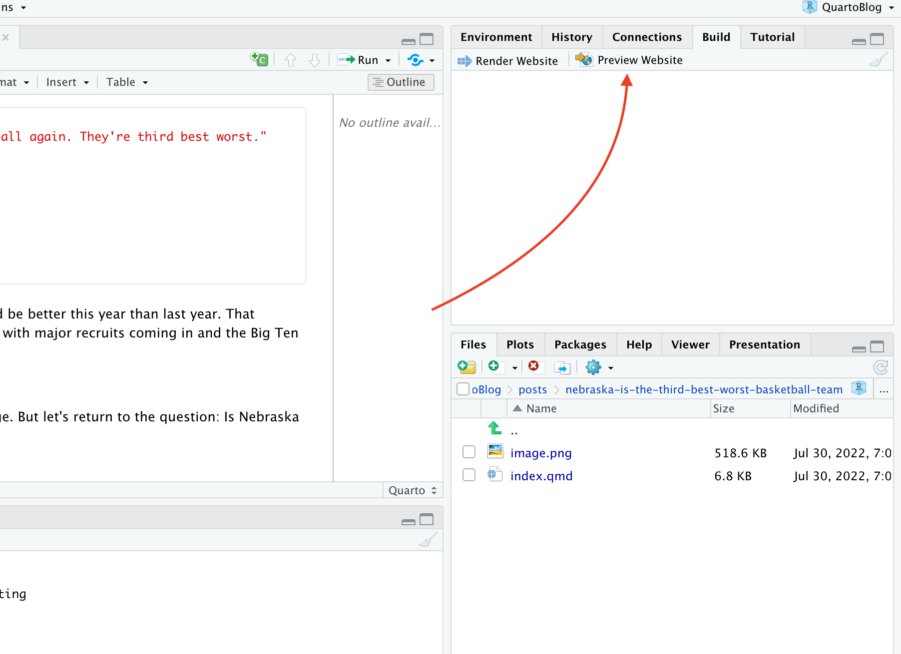

Building your own blog with blogdown
The basics
If you listen to the Measurables Podcast for about two episodes, you’ll detect a pattern. The host asks each guest how they got started in sports analytics. To a one, they’ll say they found public data and started blogging about their analysis of it. For nearly every single guest, this is their path into the field. They started messing around with data in a toolset, found something interesting and wrote a post about what they found and how they found it. Other analysts noticed it, or a hiring manager liked what they read, and the rest is history, as they say.
So, let’s do that. Let’s get you a blog so you can post your work.
Here’s our requirements:
- This doesn’t cost you anything.
- There’s zero maintenance work or upkeep. No servers to manage. No account to pay for.
- Since you’re going to be writing about your code, you should be able to create your blog posts in R Studio.
Setup
With those requirements in mind, we’re going to use a library called Quarto, which supercharges R Markdown to make documents, websites, blogs and books. It’s new, and growing, and you can do a lot with it.
You’ll first go to Quarto’s website and wait just one moment before you do anything.
Before you install Quarto, you should close R Studio. So close R Studio, install it, restart R Studio and come back to this tutorial.
After that, we’re ready to start making a blog. To do that, go to File > New Project and select New Directory (or Version Control if you know what you’re doing).

In the Project Type view, find “Quarto Blog”. Mine will probably look different than yours, but below is what the line you’re looking for looks like.

Name the directory you’re going to put this into. Keep it simple. Blog is fine. Then decide where on your computer you’re going to put it. You should put this where you’ve been putting all your homework for this class.

When you hit Create Project, you should get an R Studio screen. You might have two files open – _quarto.yml and index.qmd. If you don’t, open them (you can use the files pane in the bottom right). The important one for now is _quarto.yml. This file will look different depending on some choices you make.
The choices you need to make:
- The website title should be yours.
- The Github account (more on this soon) and Twitter handles should be yours.
- If you want a custom favicon logo, you’ll have to include one. You can ignore this for a while.
- You should pick a not-default theme. If you want to have themes for light and dark mode, the code below handles that. If you want just one theme, the default code you get in your _quarto.yml file does that.
- Add the execute: freeze bits below to your file. This way, your code only executes when you change it. This will become more important later when you have multiple posts.
project:
type: website
website:
title: "Matt Waite's Collection of Miscellany"
description: "A blog about random fiddling with code and data."
navbar:
right:
- about.qmd
- icon: github
href: https://github.com/mattwaite
- icon: twitter
href: https://twitter.com/mattwaite
favicon: logo.png
format:
html:
theme:
light: litera
dark: cyborg
css: styles.css
editor: visual
execute:
freeze: autoCreating a post
Under the files tab on the lower right, you’ll see a folder named posts. In there, you’ll find two folders with sample posts in them. There’s not much to them, but they’re useful to look at before we delete them.
To create a post, you’re going to first create a folder for it. The folder name matters because it’s going to be part of your url. For this to work your folder name has to do a couple of things:
- Contain only lowercase letters and dashes instead of spaces. So My Awesome Post will not work. It should be my-awesome-post.
- Contain words that are in your post, and would be something people would search for. If your post is about Nebraska women’s run into the NCAA Tournament, make sure your post title and folder name contains those words.
- In other words, you need to think about what your post is about before you make this folder. Can you change it later? Yes. But the sooner you start focusing on a topic the better.
After you have created the folder, go to the button next to the create folder button and create a Quarto Document. Name that document index.qmd. DO NOT NAME IT CAPITAL I INDEX. IT’S LOWER CASE I.

At the top, you will have something called a yaml header, which are things that set up the page. They are quite simple to figure out. Here is an example you should copy and edit for all of your posts.
---
title: "CHANGE THIS TO BE THE TITLE OF YOUR POST"
author: "THIS IS YOUR NAME"
date: '2022-XX-XX'
categories: [lowercaseword, lowercaseword, lowercaseword]
image: "image.png"
format:
html:
code-fold: true
---For us, the cold-fold bit is important, and it is not standard. This will allow users to see your code that makes your graphics, without displaying it. Users can decide if they want to see the code.
Now that you have a folder and an index.qmd file with a proper yaml header, you’re ready to write your post. This document works just the same as any R Markdown file we’ve worked with all semester. Create text between code blocks, and your code blocks will execute to produce graphics.
Seeing your site
While you are creating your site, you’re going to want to see it. Quarto will spin up a web server on your computer and render your site in a browser with a button. This will give you the chance to see what it will look like when it is finally published. For this step, you want to Preview your website.

Publishing your site
Quarto static site generator. What that means is that Quarto is going to take your Markdown files and create static html. What does static html mean? It means there’s no server creating it on the fly – that’s called dynamic html – so this can be hosted on the simplest of servers. Simple means cheap or even free.
Publishing takes a lot of steps to get set up, but once it is, it’s easy.
Step 1: Get a GitHub account
Go to GitHub and sign up for an account. NOTE: Your username will be part of your website address, and you could potentially be sending this to employers. I’m sure blaze420rryday has been your handle since middle school, but do you want an employer to see that? My GitHub user name is mattwaite. See what I’m getting at here?
Step 2: Set up your website repository
For the low low price of nothing, GitHub will host a website for you, and we are going to take them up on that bargain. There’s several tricks to getting this to work, but none of them are hard. They just require you to be specific.
To start, you can click on the plus sign in the top right corner or hit the green new button, depending on what your page looks like vs mine (I’m reasonably active GitHub user, so mine will look different from yours).

In the create a new repository page, the name of your respository needs to follow this pattern: yourusernamehere.github.io where yourusernamehere is … your username. So my site is mattwaite.github.io because my username is mattwaite. This is why you do not want to select swaggylovedoctor as your username, no matter how attached to it you are. Your employment chances are zero with something dumb like that.
After you’ve named the repository correctly, leave it public, check add .gitignore, and then select a gitignore template. Type R into the search, select it, and the create repository button will become active. Click create repository.
Step 3:
Don’t close your GitHub window.
In a new tab, download the GitHub Desktop App and install it.
GitHub is a version control system and a social network mixed together. Version control is like Track Changes in Word, but on steroids. If you plan on a career in analytics or data science, GitHub is a skill you will have to learn, but it’s beyond the scope of this book.
To work around this, we’re going to use GitHub Desktop to manage our interactions with GitHub. Open GitHub Desktop and log into your GitHub account in the app.
To get your repository into GitHub Desktop, go back to your tab with your GitHub repository in it. Find the Code button and click it. Click on the Open With GitHub Desktop button.
In the window that pops up, we need to set the Local Path. This path needs to be the same place your blog project is located. In other words, there needs to be a folder where you have your Blog folder, and you’re going to put it in the containing folder, NOT IN YOUR BLOG FOLDER. These two folders need to be side by side with each other in the same folder.
Click the Choose button and navigate to the folder where your blog project is located. Then, click Clone.

Step 4:
Let’s get your site on the internet.
Switch back to your blog project in R Studio. We’re going to output your site and upload it to GitHub.
To do this, we need to change _quarto.yml. We need to tell your website project that you want to publish to your GitHub folder, not the default.
Open _quarto.yml in your blog project. At the top, add this line, replacing yourusername with … your user name. This says publish to your GitHub project that you put in the same folder as your blog project:
project:
type: website
output-dir: ../YOURUSERNAME.github.ioSave _quarto.yml.
Once you are ready to build your site, you need to click on the Render Website button.
If it worked, you should see output in the Background Jobs window, which is in the same window as the Console.
Step 5
Now go to the GitHub Desktop App. You should see something that looks like this, though yours will be different from mine. The important part is you see changes to commit.

This is where you will commit files to your repository. GitHub is a two-step process for getting files from your computer to GitHub. The first is committing the files. To do that, add a message in the box next to your avatar (where it says update index.html in the screenshot above). Then click Commit to main (mine says master because it’s an older repository before GitHub switched to using main by default). The second step is to push it to GitHub. You do that on the screen that appears after you have committed your files. It should say you have No Local Changes, which is good because you sent them to GitHub. Now click Push origin.

In a few minutes, you should be able to go to username.github.io in a browser and you’ll see your site. Here’s mine.